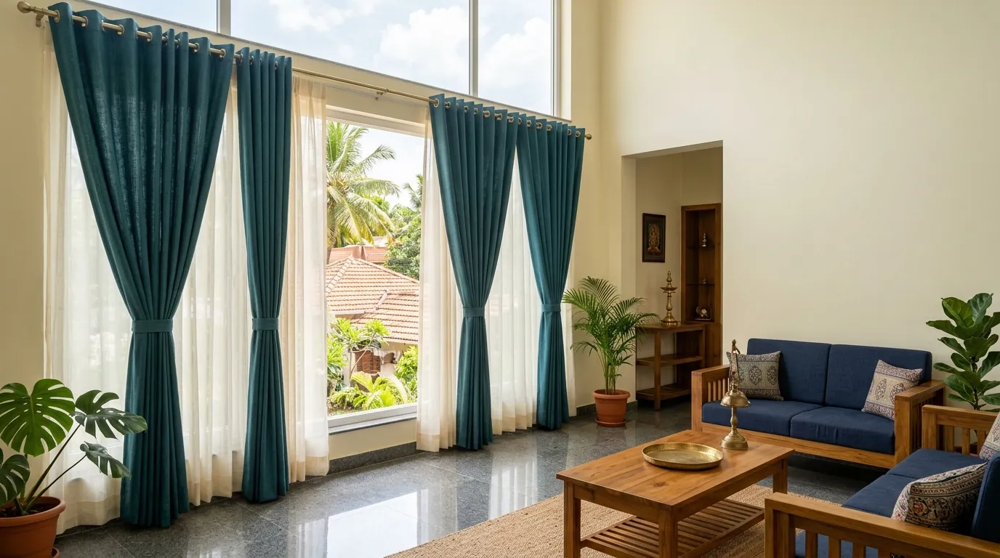
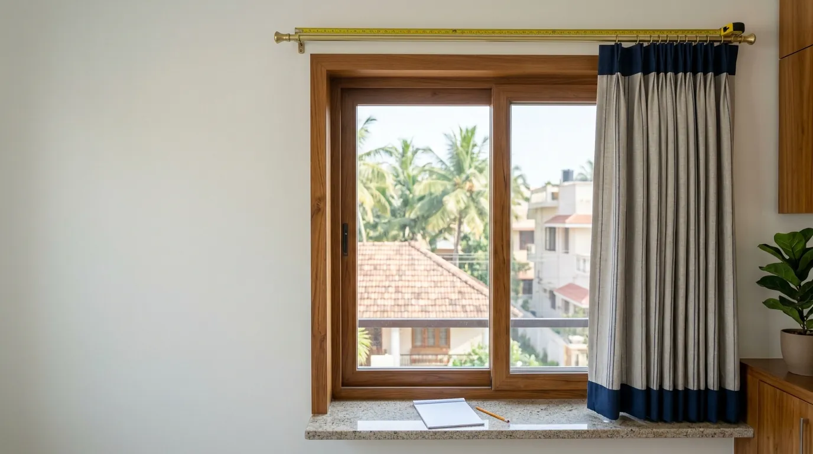
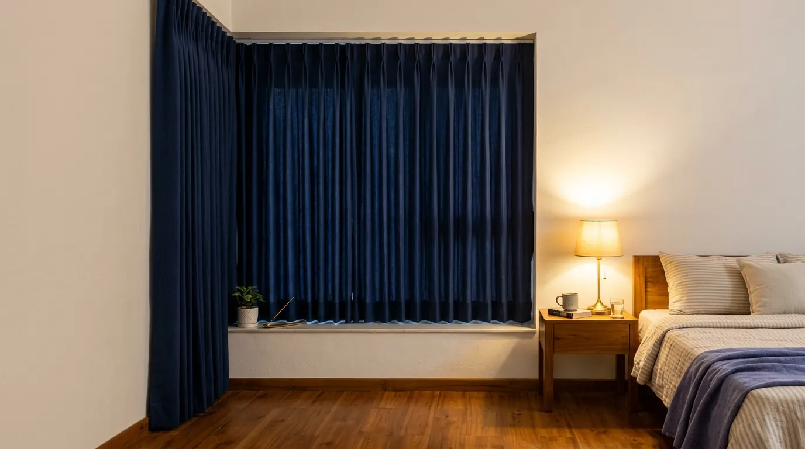

Eyelet curtains
₹1,850 to ₹2,400 for one window
Bedrooms and living rooms. Slides easily along the rod.
See it on my window →Preview only. Rates are real starting rates, but nothing you enter reaches Window Works, and product advice is still to be checked by them.
Sheers, eyelet, pleated, recess, LED and motorised curtains, stitched to your window by our own tailors. From ₹250 per metre before GST.

Curtains are priced by the metre of fabric. Type your window size and see the metres and the price for all six.
₹1,850 to ₹2,400
Plus GST. About 7.3 m of fabric per window. A guide from starting rates. The final price comes after we measure at your home.
₹1,850 to ₹2,400 for one window
Bedrooms and living rooms. Slides easily along the rod.
See it on my window →₹1,850 to ₹2,400 for one window
New homes and rooms with a false ceiling. Runs from ceiling to floor.
See it on my window →₹1,850 to ₹2,400 for one window
Living and dining rooms. Tailored folds from a stitched top.
See it on my window →A starting point. At your home we show you the catalogues and settle it together.
Every one is stitched to your window by our own tailors, in the fabric you choose at home.
₹300 / metre
Light, see-through fabric that takes the glare off the sun and keeps the room private by day, without shutting out the light. Many homes hang sheers behind heavier curtains and use both.
Best for: living rooms and any window you want light through
Price this curtain →₹250 / metre
Metal rings are punched into the top of the fabric and slide straight onto the rod, so the curtain falls in deep, even folds and opens with one pull. Clean and modern, and the most common choice.
Best for: bedrooms and living rooms
Price this curtain →₹250 / metre
Pleats are stitched into the top of the curtain, so the folds sit neat and regular all the way down. It gives a more tailored, formal look than eyelets.
Best for: living and dining rooms
Price this curtain →₹250 / metre
The track sits hidden in a recess in the ceiling, so the fabric runs from the ceiling to the floor with no rod in sight. It makes a room look taller and finished.
Best for: new homes and rooms with a false ceiling
Price this curtain →₹250 / metre
A concealed strip of light runs above the curtain and washes down the fabric, so the window glows in the evening. It works best with sheers and lighter fabrics.
Best for: living rooms and the evenings
Price this curtain →₹250 / metre
A motor in the track opens and closes the curtains by remote, which helps on tall glass, wide openings and windows behind furniture. The fabric is priced like any curtain; the motor is added on top.
Motor from ₹15,000 plus GST. More on motorisation →
Best for: tall, wide or hard-to-reach windows
Price this curtain →A curtain only looks full when it hangs in folds, so it needs about twice the window’s width in fabric. That fabric comes in 54-inch widths, and each width runs the length of the curtain plus 1 ft for the hems.
Window Works was the first company to print curtains, sheers and blinds to the customer’s own choice, and has done it since 2015. Creative companies bring us their themes, and we make them real in fabric.
Our tailors work in-house. They are from Northern India, from families that have stitched for generations.
| Curtain | From, per metre | How it works | Best for |
|---|---|---|---|
| Sheers | ₹300 | See-through, softens the daylight | Living rooms and any window you want light through |
| Eyelet curtains | ₹250 | Slides easily along the rod | Bedrooms and living rooms |
| Pleated curtains | ₹250 | Tailored folds from a stitched top | Living and dining rooms |
| Recess curtains | ₹250 | Runs from ceiling to floor | New homes and rooms with a false ceiling |
| LED curtains | ₹250 | Lit from above at night | Living rooms and the evenings |
| Motorised curtains | ₹250 + motor | Opens and closes by remote | Tall, wide or hard-to-reach windows |
Starting rates before GST. Your fabric and fittings decide the final figure.
Run a tape across the window, or along the rod if one is already up.
Go from where the rod sits down to where the curtain should end: the sill or the floor.
We add the folds and the hems for you. A rough figure is fine for now.
Your figure is only for the rough price. We measure again at your home before the final price.

At Window Works, eyelet, pleated, recess and LED curtains start from ₹250 per metre, and sheers from ₹300 per metre, all before GST. Motorised curtains add a motor from ₹15,000 plus GST. Enter your window size on this page to see a rough price for each one.
Roughly twice the window width in fabric, cut from 54-inch rolls, with each width as long as the curtain plus 1 ft for the hems. A window 5 ft wide and 7 ft tall takes about 7.3 metres.
Sheers are light and see-through: they soften the sun and keep the room private by day. Curtains are heavier and close the window off. Many homes hang both, sheers behind and curtains in front.
Eyelet curtains slide on metal rings along a rod and fall in deep, even folds, for a clean, modern look. Pleated curtains have pleats stitched into the top, for a more tailored, formal finish.
Curtains hung from a track hidden in a recess in the ceiling, so the fabric runs from the ceiling to the floor with no rod showing.
Yes. Our in-house tailors are from Northern India and come from families that have stitched for generations.
Yes. Window Works was the first company to print curtains, sheers and blinds to the customer’s own choice, and has done so since 2015.
No, it is a rough guide based on our starting rates, plus GST. Your fabric and fittings decide the final figure, and we confirm it after measuring at your home.
No. We do not run an outlet, and that saving goes to you. We bring the catalogues to your home so you can see each fabric against your own walls.

Get your rough price, then our team will call to book a visit at your home in Coimbatore. We bring the fabric catalogues with us, and there’s no charge for the estimate.
19, G.R.D Layout, A.A. Scheme Road, RS Puram, Coimbatore 641002See everything against your own wall colours before you order.
Our team visits and takes every measurement with you there.
Processed and checked at our factory, then fitted and inspected at your home.
We don’t carry the cost of running an outlet, and that benefits you.